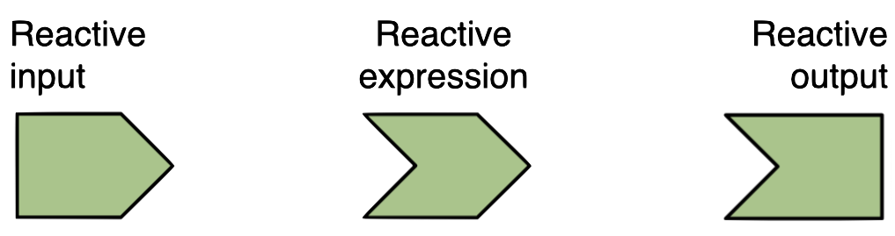
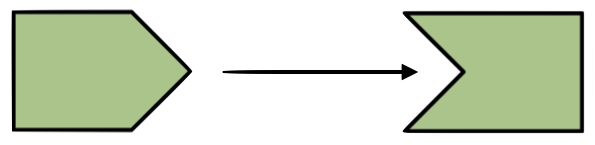

Building Web-enabled Visual Analytics Application with Shiny: Beyond the basic
Dr. Kam Tin Seong Assoc. Professor of Information Systems
School of Computing and Information Systems, Singapore Management University
21 Jan 2023
Overview
In this lesson, selected advanced methods of Shiny will be discussed. You will also gain hands-on experiences on using these advanced methods to build Shiny applications.
By the end of this lesson, you will be able to:
gain further understanding of the reactive feature of Shiny and Shiny’s functions that support reactive flow,
build interactive Shiny application by using plotly R and
build static, interactive and reactive geovisualisation application by using tmap
Reactive Flow
By default, Shiny application is Reactive!
Reactive Flow - the basic
The user selects an input, this input goes through some expression in the server, and an output is rendered. Each time the user changes their input selection, the expression that generates the output will automatically re-execute, and the relevant output will be re-rendered based on the new value of the input.
In a Shiny application, there’s no need to explictly describe the relationships between inputs and outputs and tell R what to do when each input changes, Shiny automatically handles these details for you.
Three components of reactive execution in Shiny are:
reactive inputs,
reactive expressions, and
reactive outputs.

Reactive elements
Reactive inputs and outputs
A reactive input is a user input that comes through a browser interface, typically.
A reactive output is something that appears in the user’s browser window, such as a plot or a table of values.

One reactive input can be connected to multiple outputs, and vice versa. For example we might have a UI input widget for filtering out data based on user’s selection, and the filtered data can be used in multiple outputs like plots and summaries.
Reactive expressions
A reactive expressions is component between an input and an output.
It can both be a dependent (i.e be a child) and have dependents (i.e. be a parent).
In-class Exercise: Building a reactive scatter plot using Shiny
In this in-class exercise, you are going to explore advanced reactive features.
To get started, you need to do the followings:
start a new Shiny Application
load the necessary R package, namely Shiny and tidyverse
import the data file (i.e. Exam_data.csv )
build a basic scatterplot look similar to the figure on the right.
Suppose your app has an input widget where users can enter text for the title of the plot. However you only want the title to update if any of the other inputs that go into the plot change. You can achieve this by isolating the plot title such that:
When input\(x or input\)y changes, the plot will update.
But when only the title input (input$plot_title) changes, the plot will not update.
selectInput(inputId ="xvariable",label ="x Variable:",choices =c("English"="ENGLISH","Maths"="MATHS","Science"="SCIENCE"),selected ="SCIENCE"),textInput( inputId ="plot_title", label ="Plot title", placeholder ="Enter text to be used as plot title"), actionButton("goButton", "Go!")
Two approaches: - Using plotly directly, or - Plot the basic visualisation using ggplot2, then wrap the visualisation object into plotly object using ggplotly().
In-class Exercise: Embedding an interactive scatter plot in Shiny
Install plotly R package if it has yet to be install in RStudio.
include a new line as shown below to launch plotly library.
library(shiny)library(plotly) library(tidyverse)
At UI, edit the code as shown below
mainPanel(plotlyOutput("scatterPlot")
edit the server section of the Shiny app as shown below.
server <-function(input, output){ output$scatterPlot <-renderPlotly({ #<< p <-ggplot(data = exam, aes_string(x = input$xvariable,y = input$yvariable)) +geom_point(color="grey 10", size=1)ggplotly(p) #<< })}
In-class Exercise: Embedding an interactive bar chart in Shiny
In this exercise, you will learn how going to embed an interactive bar chart in Shiny by using plotly. The output will look similar to the figure below.
In-class Exercise: Embedding an interactive bar chart in Shiny
server <-function(input, output) { output$race <-renderPlotly({ p <-ggplot(data=exam, aes(x=RACE)) +geom_bar()ggplotly(p) }) output$gender <-renderPlotly({ d <-event_data("plotly_click") #<<if (is.null(d)) return(NULL) #<< p <- exam %>%filter(RACE %in% d$x) %>%#<<ggplot(aes(x=GENDER)) +geom_bar() ggplotly(p) %>%layout(xaxis =list(title = d$x)) #<< }) output$info <-renderPrint({event_data("plotly_click") #<< }) }
In-class Exercise: Embedding a drill-down bar chart in Shiny (Revised version)
The ui:
library(shiny)library(plotly)library(tidyverse)exam <-read_csv("data/Exam_data.csv")ui <-fluidPage(titlePanel("Drill-down Bar Chart"),mainPanel(plotlyOutput("race"),plotlyOutput("gender"),verbatimTextOutput("info") ) )
The server:
server <-function(input, output) { output$race <-renderPlotly({ p <- exam %>%#<<plot_ly(x =~RACE) #<< }) output$gender <-renderPlotly({ d <-event_data("plotly_click")if (is.null(d)) return(NULL) p <- exam %>%filter(RACE %in% d$x) %>%ggplot(aes(x=GENDER)) +geom_bar() ggplotly(p) %>%layout(xaxis =list(title = d$x)) }) output$info <-renderPrint({event_data("plotly_click") }) }
In-class Exercise: Embedding A Static Map in Shiny
In this exercise, you will learn how to embed a static map in Shiny by using renderPlot(). By the end of this exercise, you will be able to plot a static map on Shiny display as shown below.
In-class Exercise: Embedding A Static Map in Shiny
In this exercise, you will learn how to embed an interactive map in Shiny by using renderTmap() and tmapOutput() of tmap package. The interactive map is a proportional symbol map showing distribution of winnings by branches/outlets.
st_as_sf() of sf package is used to convert the tibble data frame into simple feature data frame by using values from the XCOORD and YCOORD fields. The crs argument is used to specify the projected coordinates systems (i.e. svy21 for Singapore).